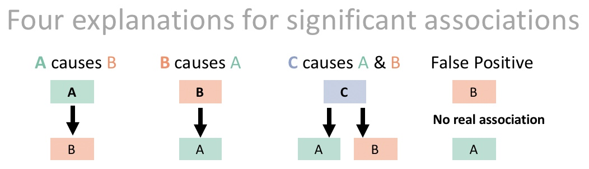
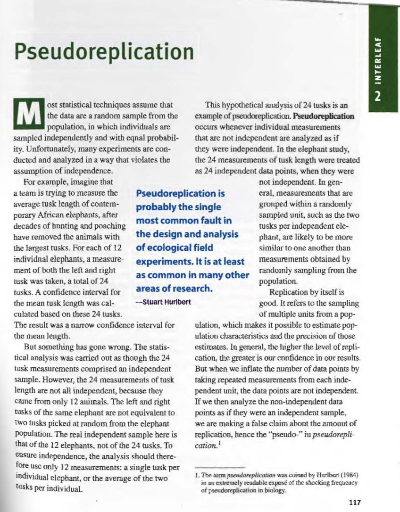
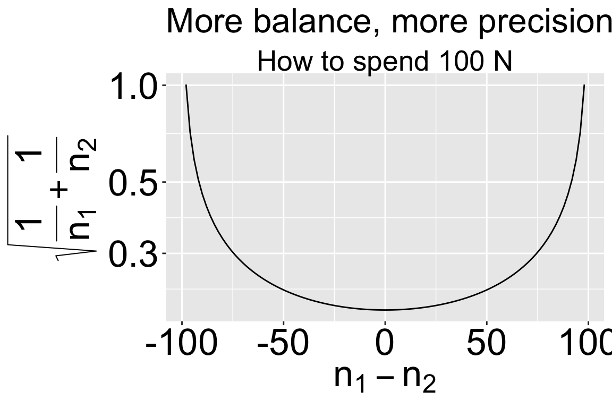
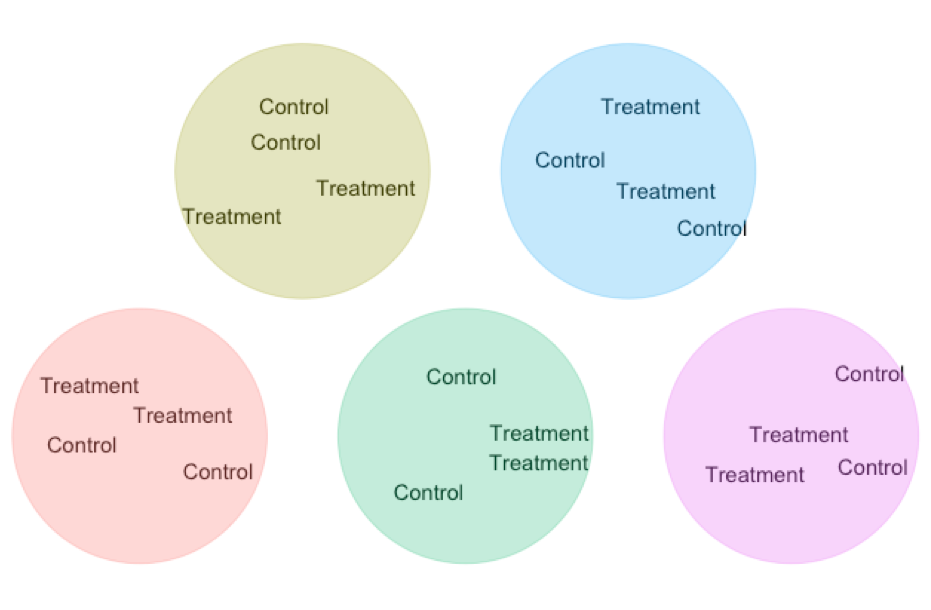

25. Study Design
Motivating Scenario: You are about to conduct a scientific study (or critically evaluate the results from a completed one) and want to know what design gives you the best chance of testing your scientific hypothesis effectively and fairly.
Learning Goals: By the end of this chapter, you should be able to:
- Explain how randomization allows us to make causal claims.
- Identify common sources of experimental bias and describe how to avoid them.
- Define pseudo-replication, explain why it is a problem, and recognize how to prevent it.
- Plan for sufficient power and precision — at least conceptually, even if not calculating it in detail.
- Recognize best practices for making inferences from observational (non-experimental) studies.
Review / Set Up
To consult the statistician after an experiment is finished is often merely to ask him to conduct a post mortem examination. He can perhaps say what the experiment died of.
So far we have focused on two goals of statistics:
Estimation (with uncertainty) — How can we responsibly describe aspects of the world based on our limited perspective from a finite sample?
Hypothesis testing — Can a pattern in a sample be reasonably explained by the vagaries of sampling from a “null” distribution, or is that explanation unlikely?
These are reasonable aims. But too much focus on significance testing and uncertainty can blur the bigger picture. Our statistical expertise and efforts are wasted if we don’t critically evaluate the implications of a study. This brings us to our third – and in my view, the most important – goal of statistics:
- Inferring causation — How can we determine what process(es) generate the statistical pattern we detect (or failed to detect) in our data?
As we work through this goal, we will transition from dealing with other people’s data to designing our own scientific studies. There are two excellent reasons for this: (1) Many of you will conduct some form of scientific study during your career. (2) Even if you never conduct a scientific study, learning how to design a good study helps you understand both the reasoning behind and the shortcomings of scientific studies and claims.
When considering the implications of a study, it’s important to reflect on its goals and overall message:
If the goal is simply to make a prediction, causation isn’t a concern. Instead, we focus on issues like sampling bias, sampling error, and other sources of uncertainty.
However, many studies aim to make causal claims. For example, if I’m thinking about exercising regularly to increase my lifespan, I don’t just want to know if people who exercise tend to live longer—they might live longer due to other factors, like a healthier diet. What I truly want to know is whether taking up exercise is likely, on average, to increase my lifespan.
Correlation Does Not Necessarily Imply Causation
What does this mean? It’s not just about \(r\). Rather, it’s a reminder that statistical associations between two variables, A and B, do not necessarily mean that B caused A. For example, if lm(A ~ B) %>% anova() yields a p-value < 0.05, we cannot automatically conclude that B caused A. A p-value only tells us how incompatible the data are with the null model, not what is responsible for this incompatibility. It could be that A causes B, both are caused by a third variable C, or the result could even be a false positive (Figure 1.1, see also our earlier chapter).
A confounding variable is an unmodeled variable that distorts the relationship between explanatory and response variables, potentially biasing our interpretation.
Watch 8:02 to 10:26 of this video, Correlation Doesn’t Equal Causation from Crash Course Statistics, below
Experiments: One weird trick to infer causation
By randomly assigning individuals to treatment groups, experiments can provide evidence of causation, because randomization breaks any link between the treatment and other variables that might otherwise confound the results.
Of course, like all of statistics, an experiment represents a single sample. So we must be aware of potential issues regarding sampling bias and sampling error, and plan accordingly.
Potential Biases in Experiments
Poorly executed experiments can introduce bias. This is bad because the whole point of an experiment is to remove confounds and bias. Here are some common ways in which experiments can introduce bias and how to avoid these issues
Time heals Whenever I feel terribly sick, I call the doctor, and usually get an appointment the following week. Most of the time I get better before seeing the doctor. I therefore joke that the best way for me to get better is to schedule a doctor appointment. Of course, calling the Doctor didn’t heal me. Rather I called the Doctor when I felt my worst, and got better with time. This is because we tend to get better.
“Regression to the mean” The most extreme observations in a study are biased estimates of the true parameter values. That’s because being exceptional requires both an expectation of being exceptional (extreme \(\widehat{Y_i}\)) and a residual in the same direction (a large positive residual for high values or a large negative residual for low ones). Because extreme values partly reflect random noise, that noise is unlikely to repeat in the same direction on a second measurement. As a result, extreme observations tend to move closer to the average, even without any experimental intervention.
Experimental artifacts The experimental manipulation itself, rather than the treatment we care about could be causing the experimental result. Says we hypothesize that birds are attracted to red, so we glue red feathers onto some birds and see that that increases their mating success. We want to make sure that it is the red color, not the glue or added feathers that drives this elevated attractiveness.
Known treatments are a special kind of experimental artifact. Knowledge of the treatment by either the experimental subject or the experimenter, can introduce a bias. For example, people who think they have gotten treated might prime themselves for improvement. Processes like these are known as a placebo effect. Or, if the researchers know the treatment they may subconsciously bias their measurements or the way the treat their subjects.
Listen to the 7 minute clip from radiolab, below for examples of the placebo and how it may work.
Eliminating Bias in Experiments: To minimize bias and allow for causal interpretation of experimental results, strong experimental designs usually include
Introducing effective controls It’s usually a good idea to have a “do nothing” treatment as a control, but this is not enough. We should also include a “sham treatment” or “placebo” is identical to the treatment in every way but the treatment itself. Taking our bird feathers example, we would introduce a treatment in which we glued blue feathers, and maybe ne where we glued on black feathers, to ensure the color red was responsible for the elevated attractiveness observed in our study.
“Blinding” If possible, we should do all we can to ensure that neither the experimenter nor the subjet knows which treatment they received.
Watch this video, on controls, placebos and blinding in experimental design from Crash Course Statistics, below
Sampling error in experiments
Sampling bias isn’t our only consideration when planning a study, we would also like to increase our precision by decreasing sampling error.
Recall that sampling error is the chance deviation between an estimate and its true parameter which arises because of the process of sampling, and that we can summarize this as the standard deviation of the sampling distribution (aka the standard error). The standard error is something like the standard deviation divided by the square root of the sample size, so we can minimize sampling error by:
- Increasing the sample size (and avoid pseudoreplication)
- Decreasing variability
Increase the sample size and avoid pseudo-replication
Well of course! We learned this as the law of large numbers. But beware the samples you add should be independent, otherwise you will have “pseudo replicated” your study.
Pseudo-replication occurs when we treat non-independent samples as if they were independent replicates. For example, if we fertilize one garden and leave another unfertilized, then measure many plants within each, we might be tempted to treat each plant as a replicate (top of Figure 1.2). However, these plants share the same soil, light, and microclimate — so they are not independent. The true sample size is the number of gardens, not the number of plants. Because pseudo-replication inflates our apparent sample size, it leads to artificially small standard errors and an excess of false positives.
To avoid pseudo-replication:
- Have the unit of analysis matches the unit of randomization (e.g., the garden, not the plants within it, if treatments are applied at the garden level).
- Randomize treatments across independent experimental units (bottom of Figure 1.2).
- Replicate at the level of the treatment (when possible), not just within it. E.g., several fertilized and unfertilized gardens, not just several plants per garden.
![**Diagram comparing pseudo-replication and actual replication in experimental design:** *Top section (Pseudo-replication)*: Two groups are depicted, Garden 1 (G1) and Garden 2 (G2). Garden 1 receives fertilizer (F), and Garden 2 receives no fertilizer (NF). Each garden has multiple palm trees, but all trees within Garden 1 receive fertilizer, while all trees in Garden 2 do not. This setup illustrates pseudo-replication, where the experimental treatment (fertilizer) is confounded with differences between the two gardens (the environment), making it impossible to separate the effect of the fertilizer from the garden-specific factors. *Bottom section (Actual replication):* Twelve gardens (G1–G12) are shown, each with a single palm tree. Fertilizer (F) and no fertilizer (NF) are randomly assigned to each garden. This illustrates true replication, where the effect of the fertilizer can be independently assessed across different environments because the treatments are randomly distributed, minimizing confounding factors.](../figs/old/pseudorep.jpeg)
Be sure to read Interleaf 2 on pseudo-replication from Whitlock & Schluter (2020).

Decrease (external) variability.
We want to minimize the variability unrelated to our treatment, but how? Well, we only have so much control of this because some variability is natural. Still there are things we can do to increase the precision of our estimated effect and minimize extraneous variation.
- More precise measurements More careful counting, fancier machines etc etc can provide more accurate measurements for each individual in our sample and eliminating this extraneous variability should decrease variability in our sample.

Balanced design Balance refers to the similarity in sample sizes for each treatment. Recall that \(SE_{\overline{Y_1}-\overline{Y}_2} = \sqrt{s_p^2(\frac{1}{n_1}+\frac{1}{n_2})}\). So, for a fixed total sample size, more balanced experiments decrease uncertainty mean differences between treatments.
Matching / Blocking A standard experimental design is two randomize who gets the treatment and who get the control. But we can do even better than that!!! We have seen that a paired t-test gets extra power by comparing natural pairs who are alike in many ways except the treatment. This design decreases variability in our estimated difference because in each pairs we minimize extraneous variation unrelated to treatment. We can scale that principle up to larger studies ANOVAs etc….

Planning for power and precision
We could maximize our power and precision by having an infinitely large sample, but this is obviously silly. We’d be wasting a bunch of time and resources over-doing one study and will miss out on so many others. So, how do we plan a study that is big enough to satisfy our goals, without overdoing it?
We need to think about the effect size we care about and the likely natural variability
- How precise of an estimate do we need for our biological story? In some cases, small difference mean a lot, in other cases, ballpark estimates are good enough. It’s your job as the researcher to know what is needed for your question.
- What effect size is worth knowing about? The null hypothesis is basically always false. With an infinite sample size, we’d probably always reject it. But in many of these cases, the true population parameter is so close to zero, that the null hypothesis might as well be true. Again, it’s your job as a researcher to consider what size of an effect you would like to be able to see.
- How much variability do we expect between measurements. Again, your biological knowledge is required here (or you could consider difference relative to variability when considering precision and effect size of interest)
Estimating an appropriate sample size.
We use power analyses to plan appropriate sample sizes for a study. A power analysis basically finds the sample size necessary so that the sampling distribution of your experiment has
- Some specified power to differentiate between the null model and the smallest effect size that you would like to be able to identify and/or
- Probability of being as or more precise than you want.
The traditional specified power researchers shot for is 80%, but in my opinion that is quite low and aiming for 90% power seems more reasonable.
The are numerous mathematical rules of thumb for power analyses, as well as online plugins e.g. this one from UBC and R packages (pwr is most popular)
The sample size we start with is rarely the sample size we end with – plants die, people drop out, RNA degrades etc etc. Keep this in mind when designing your experiment, and increase your sample size to accommodate the expected number of lost data points.
Example with the pwr package
The pwr package helps you evlaute power for numerous standard statistical procedures. Say you wanted to design a study that you would analyze with a t-test, and you wanted a ninety percent chance of rejecting the null if the true population value of Cohen’s D was 1.
library(pwr)
pwr.t.test(power = .9,
d = 1, # Effect size (Cohen's d)
sig.level = 0.05, # Significance level
alternative = "two.sided")
Two-sample t test power calculation
n = 22.02109
d = 1
sig.level = 0.05
power = 0.9
alternative = two.sided
NOTE: n is number in *each* groupOr say you wanted to know the power you had to reject the null if the true COhen’s D was 2 and you did and experiment with two groups of five samples.
library(pwr)
pwr.t.test(n = 5,
d = 2, # Effect size (Cohen's d)
sig.level = 0.05, # Significance level
alternative = "two.sided")%>%
tidy()%>%
mutate(n = 5, g = 2, sig_level = 0.05) %>% mutate(power = round(power, digits = 3))%>%gt()| n | sig.level | power | g | sig_level |
|---|---|---|---|---|
| 5 | 0.05 | 0.791 | 2 | 0.05 |
See Chapter 20: Chapter 20 Sample Size Calculations with {pwr} from Higgins (2024) for more.
Unfold this section to learn more about simulating to estimate power and precision (optional)
Often experimental design is more complex than the off-shelf options in the pwr package. Of course, we could try to find a package better suited to our study, but sometime we will fail. Here I focus on one way we can estimate power and precision – we can simulate!!! There is a bit on new R in here, including writing functions. Enjoy if you like, skim if you don’t care. I also note that there are more efficient ways to code this in R. I ca provide examples if there is enough demand.
Let’s first write our own function to
- Simulate data from two populations with a true mean difference of
x(the minimal value we care about) and a standard deviation of s from a normal distribution.
- Run a two sample t.test.
simTest <- function(n1, n2, x, s){
sim_id <- runif(1) # picka random id, in case you want it
sim_dat <- tibble(treatment = rep(c("a","b"), times = c(n1, n2)),
exected_val = case_when(treatment == "a" ~ 0,
treatment == "b" ~ x)) %>%
mutate(sim_val = rnorm(n = n(),mean = exected_val, sd = s))
tidy_sim_lm <- lm(sim_val ~ treatment, data = sim_dat) %>%
broom::tidy() %>%
mutate(n1 = n1, n2 = n2, x = x, s = s, sim_id = sim_id)
return(tidy_sim_lm)
}We can see the outcome of one random experiment, with a sd of 2, and a difference of interest equal to one, and a sample size of twenty for each treatment.
one_sim <- simTest(n1 = 20, n2 = 20, x = 1, s = 2)
one_sim %>% mutate_if(is.numeric,round,digits = 4) %>%DT::datatable( options = list( scrollX='400px'))We probably want to filter for just treatmentb, because we don’t care about the intercept
filter(one_sim, term == "treatmentb")# A tibble: 1 × 10
term estimate std.error statistic p.value n1 n2 x s sim_id
<chr> <dbl> <dbl> <dbl> <dbl> <dbl> <dbl> <dbl> <dbl> <dbl>
1 treatmentb 0.457 0.672 0.680 0.501 20 20 1 2 0.451We can replicate this many times
n_reps <- 500
many_sims <- replicate(simTest(n1 = 20, n2 = 20, x = 1, s = 2), n = n_reps, simplify = FALSE) %>%
bind_rows() %>% # shoving output togther
filter(term == "treatmentb")
many_sims %>% mutate_if(is.numeric,round,digits = 4) %>%DT::datatable( options = list(pageLength = 5, lengthMenu = c(5, 25, 50), scrollX='400px'))We can summarize this output to look at our power and the standard deviation, and upport and lower 2.5% quantiles to estimate our precision
many_sims %>%
summarise(power = mean(p.value < 0.05),
mean_est = mean(estimate),
sd_est = sd(estimate),
lower_95_est = quantile(estimate, prob = 0.025),
upper_95_est = quantile(estimate, prob = 0.975))# A tibble: 1 × 5
power mean_est sd_est lower_95_est upper_95_est
<dbl> <dbl> <dbl> <dbl> <dbl>
1 0.338 0.993 0.651 -0.376 2.28We can turn this last bit into a function and try it for a bunch of sample sizes
# A tibble: 4 × 6
n power mean_est sd_est lower_95_est upper_95_est
<dbl> <dbl> <dbl> <dbl> <dbl> <dbl>
1 10 0.214 1.03 0.931 -0.805 2.80
2 20 0.362 1.04 0.650 -0.149 2.34
3 50 0.69 1.00 0.408 0.171 1.77
4 100 0.95 1.00 0.283 0.484 1.56Inferring causation when we can’t do experiments
Experiments are our best way to learn about causation, but we can’t always do experiments. Sometimes experiments are unethical, impractical, or impossible. Do we have any hope of inferring causation in these cases? The short answer is – sometimes, if we’re lucky.
One good way to make causal claims from observational studies is to find matches, or “natural experiments” in which the variable we cared about changed in one set of cases, but did not in paired cases that are similar in every way except this change. If we cannot make a rigorous causal claim it is best not to pretend we can. Rather, we should honestly describe what we can and cannot infer from our data.
The next chapter goes into the problem of “causal inference” in more detail.